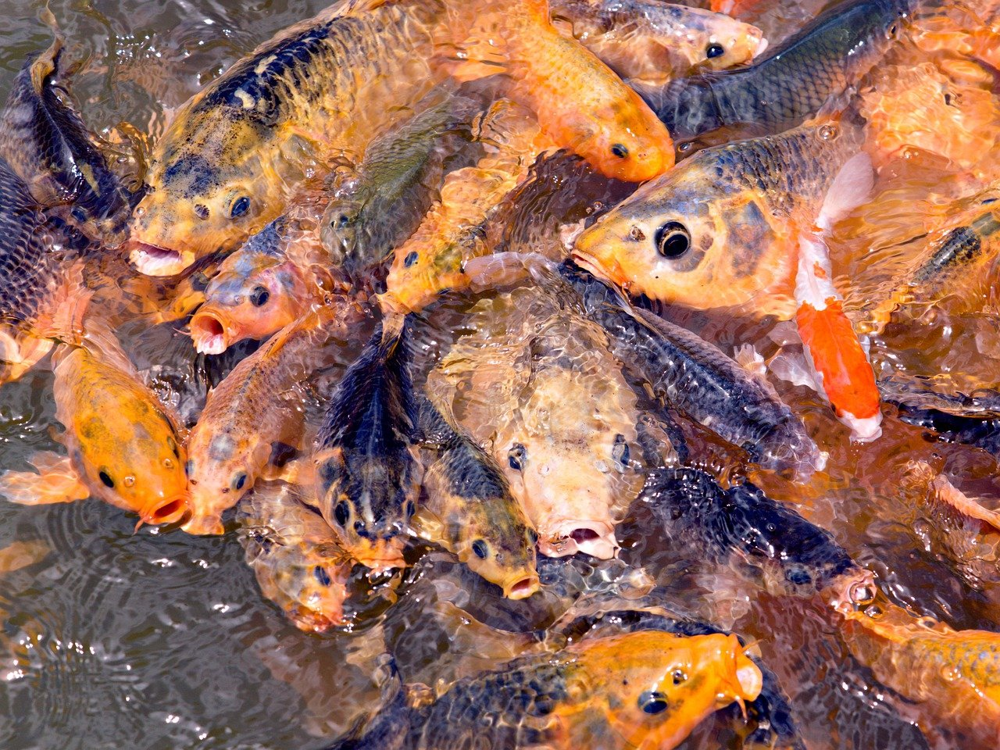

Peces
Los peces son animales vertebrados primariamente acuáticos, generalmente ectotérmicos y con respiración por branquias. Suelen estar recubiertos por escamas, y están dotados de aletas, que permiten su movimiento continuo en los medios acuáticos, y branquias, con las que captan el oxígeno disuelto en el agua.